Herramientas
Nubes de palabras y palabras vacías
La herramienta Cirrus muestra una nube de palabras en la que aparecen las palabras más frecuentes en el corpus de novelas, siendo las que aparecen con mayor tamaño las palabras más comunes.
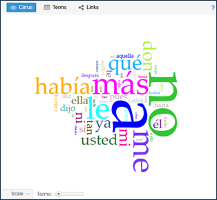
La herramienta Cirrus tiene un control deslizante cerca de la parte inferior (con la etiqueta Término) que permite ajustar el número de palabras que se muestran. De forma predeterminada, el valor mínimo es 25 y el valor máximo es 500, y el control deslizante se ajusta en incrementos de 25.
En la barra gris en la parte superior de la herramienta Cirrus encontramos también las herramientas Términos y Enlaces. La primera de ellas, Términos, es una tabla que muestra tres columnas de forma predeterminada:
- Términos: es la palabra en sí
- Contar: es la frecuencia absoluta de cada término, corresponde al número de veces aparece en el corpus.
- Tendencia: es un gráfico que muestra la distribución del término en los segmentos del corpus; puedes pasar el ratón por encima del gráfico para ver resultados más precisos.
Es posible gestionar las columnas pasando el ratón por encima de la barra de título de una columna y abriendo el menú desplegable, marcando allí las columnas que deseamos ver y las que no. En esta herramienta hay otras dos columnas que pueden resultar de interés: Relativo y Oblicuidad
Relativo: es la frecuencia relativa de cada término.
Las frecuencias absolutas son poco informativas. En un corpus de seis palabras, tres de ellas representarían el 50% del total, mientras que esas mismas tres palabras en un corpus de 6,000 representarían el 0.1% del total. Para evitar la sobrerrepresentación de un término, los lingüistas utilizan la frecuencia relativa normalizada o frecuencia relativa, calculada dividiendo la frecuencia absoluta por el número total de términos del documento. Así, en el ejemplo anterior, las frecuencias relativas serían 0.5% y 0.0005% respectivamente. Esto es especialmente útil al comparar las frecuencias relativas en corpus o documentos diferentes.
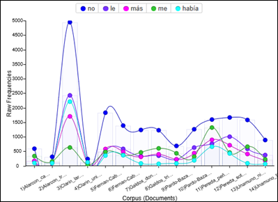
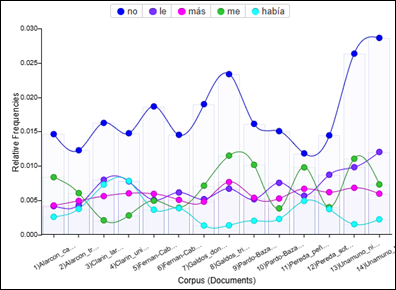
Oblicuidad: es la medida estadística de la simetría de las frecuencias relativas de un término en el corpus, indicando la distribución de un término.
La simetría estadística se calcula observando las desviaciones de una frecuencia con respecto a la media. Cuanto más cercano a cero sea el grado de la asimetría estadística, más regular es la distribución de ese término (es decir que ocurre con una media muy similar en todos los documentos). Un valor positivo significa que el término está por debajo de la media, y cuanto más grande sea, más asimétrico es el término, es decir, que ocurre muchísimo en un documento pero que casi no ocurre en el corpus. Por el contrario, un valor negativo indica que el término está por encima de la media, y cuanto más grande sea, menos asimétrico es el término, es decir, que ocurre muchísimo en el corpus.
También se pueden ver las palabras más frecuentes enumeradas en la herramienta Sumario, con el número de veces que se menciona la palabra en todo el corpus de las Novelas del siglo XIX.
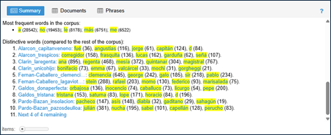
En la barra gris en la parte superior de la herramienta Sumario encontramos también las herramientas Documentos y Frases. La primera de ellas, Documentos, es una tabla que muestra información sobre cada uno de los documentos que conforman el corpus.
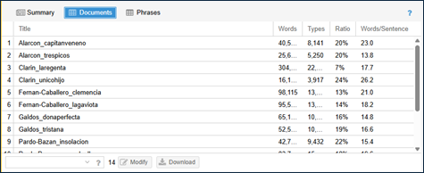
La herramienta Documentos muestra cuatro columnas de forma predeterminada:
- Título: el título del documento (o el nombre del archivo si no se ha encontrado un título mejor).
- Palabras: el número de palabras individuales (tokens) encontradas en el documento (por ejemplo, se cuenta cada aparición de "madre")
- Tipos: número de formas de palabras encontradas en el documento (por ejemplo, todas las apariciones de "madre" se cuentan como una forma de palabra).
- Proporción: relación entre los tipos y las palabras individuales (tokens), expresada en porcentaje. Un número más alto suele significar una mayor diversidad de vocabulario.
- Palabras/frase: una aproximación del número medio de palabras por frase (recuento de palabras/frases); la forma en que se calculan las frases debe considerarse muy aproximada, especialmente debido a las complicaciones con las abreviaturas y otros usos de la puntuación (el análisis sintáctico de las frases lo realiza la clase BreakIterator de Java, y también depende de la detección precisa del idioma).
La herramienta Frases, por su parte, muestra secuencias repetidas de palabras organizadas por frecuencia de repetición o número de palabras en cada frase repetida. Por defecto, las frases se muestran en orden descendente de longitud de frase.
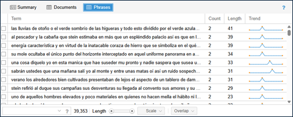
La herramienta Frases muestra cuatro columnas de forma predeterminada:
- Término: la frase que se repite.
- Contar: el número de veces que la frase aparece en el documento, es decir su frecuencia absoluta.
- Longitud: el número de palabras de la frase.
- Tendencia: el gráfico que muestra la distribución de frecuencias relativas del término en el documento.
La barra inferior de la herramienta Frases tiene una barra de búsqueda, y varias opciones adicionales.
- Barra de búsqueda: permite buscar términos concretos y qué frases contienen dicho término, o buscar determinadas frases en conjunto.
- Escala: el control deslizante señala los límites superior e inferior de la longitud de la frase.
- Sobrepuesto: especifica cómo se muestran las frases que se solapan
- ninguno (mantener todos): no hay ningún filtro, se muestran las frases que se solapan.
- priorizar las frases más largas: sólo se conserva la frase más larga y todas las demás se filtran.
- priorizar las frases más frecuentes: se muestan las frases que aparezcan con mayor frecuencia en todo el documento.
Palabras vacías Voyant Tools tiene una lista de palabras clave comunes que se han eliminado del corpus:
al, alguna, algunas, alguno, algunos, algún, ambos, ampleamos, ante, antes, aquel, aquellas, aquellos, aqui, arriba, atras, bajo, bastante, bien, cada, cierta, ciertas, ciertos, como, con, conseguimos, conseguir, consigo, consigue, consiguen, consigues, cual, cuando, de, del, dentro, donde, dos, el, ellas, ellos, empleais, emplean, emplear, empleas, empleo, en, encima, entonces, entre, era, eramos, eran, eras, eres, es, esta, estaba, estado, estais, estamos, estan, estoy, fin, fue, fueron, fui, fuimos, gueno, ha, hace, haceis, hacemos, hacen, hacer, haces, hago, incluso, intenta, intentais, intentamos, intentan, intentar, intentas, intento, ir, la, largo, las, lo, los, mientras, mio, modo, muchos, muy, nos, nosotros, o, otro, para, pero, podeis, podemos, poder, podria, podriais, podriamos, podrian, podrias, por, por qué, porque, primero desde, puede, pueden, puedo, que, quien, sabe, sabeis, sabemos, saben, saber, sabes, se, ser, si, siendo, sin, sobre, sois, solamente, solo, somos, soy, su, sus, también, teneis, tenemos, tener, tengo, tiempo, tiene, tienen, todo, trabaja, trabajais, trabajamos, trabajan, trabajar, trabajas, trabajo, tras, tuyo, ultimo, un, una, unas, uno, unos, usa, usais, usamos, usan, usar, usas, uso, va, vais, valor, vamos, van, vaya, verdad, verdadera cierto, verdadero, vosotras, vosotros, voy, y, yo
Es posible eliminar palabras que no añaden mucho significado a nuestro análisis, para ello procedemos a filtrarlas. Por ejemplo, vamos a filtrar las palabras “había”, “más” y “no” de la nube de palabras. Para ello primero colocamos el cursor sobre la barra gris en la parte superior de la ventana de la nube de palabras hasta que aparezca un menú de iconos. Luego hacemos clic en el icono azul de opciones. En el menú desplegable Opciones podemos modificar la configuración de la herramienta. Estas son las opciones disponibles:
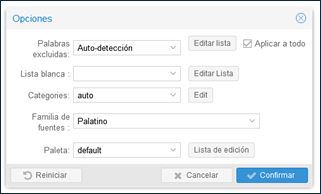
- Palabras excluidas: permite definir un conjunto de palabras vacías que van a ser excluidas; la guía de palabras vacías ofrece más información
- Lista blanca: permite definir un conjunto de palabras permitidas (lo opuesto a una lista de palabras vacías), solo los términos de esta lista se mostrarán en Cirrus (hay que tener en cuenta que la lista de palabras vacías aún está activa, por lo que debemos elegir “Ninguna” en el menú de palabras vacías para desactivarla)
- Categorías: permite especificar categorías en función de la frecuencia de las palabras.
- Familia de fuentes: determina qué fuente utiliza Cirrus. Aquí también se puede especificar una fuente instalada en nuestro ordenador, pero, por supuesto, es posible que no esté disponible en otros ordenadores (en cuyo caso se usa una fuente predeterminada, segura para la web)
- Paleta: permite editar la paleta de colores.
Para filtrar las palabras excluidas, hay que hacer clic en el botón Editar lista a la derecha del menú desplegable Palabras excluidas: Auto-Detección.
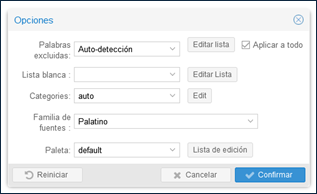
En la ventana emergente de edición de la lista de palabras irrelevantes, debemos escribir había, más y no y cualquier otra palabra que deseemos filtrar y, a continuación, hacemos clic en Salvar.
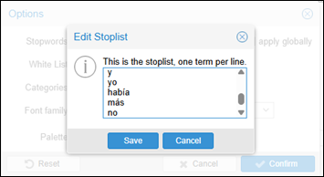
Al regresar a la ventana emergente Opciones hay que hacer clic en Confirmar. La nube de palabras debería actualizarse automáticamente.
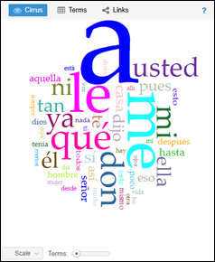
Las palabras solo se filtrarán en la herramienta Cirrus. Para que el resto de las herramientas de Voyant Tools se actualicen con la nueva lista de palabras vacías es necesario hacer clic en el botón Reset en la herramienta Tendencias.
Tendencias y frecuencia de las palabras
La herramienta Tendencias muestra un gráfico de líneas con las palabras más utilizadas en el corpus. Cada serie del gráfico está coloreada según la palabra que representa. En la parte superior del gráfico, una leyenda muestra qué palabras están asociadas con ciertos colores. Se puede hacer clic en las palabras de la leyenda para que se muestren o no. Al pasar el cursor sobre cualquier punto del gráfico, aparece un cuadro de llamada con información sobre el término seleccionado y su frecuencia.
De forma predeterminada, la herramienta Tendencias muestra las frecuencias relativas de las palabras en el corpus. Para ver el recuento absoluto de cada documento del corpus, debemos seleccionar Frecuencias sin pulir, que podemos encontrar al hacer clic en el icono azul de opciones en la barra de menú gris.
En la ventana emergente Opciones, hay que hacer clic en Frecuencias sin pulir y, a continuación, pulsar Confirmar. La herramienta Tendencias debería actualizarse automáticamente con el recuento absoluto de cada una de las palabras principales del corpus.
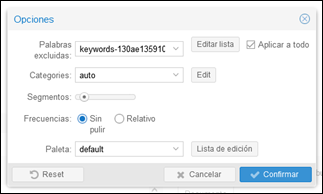
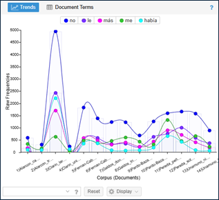
En cualquier momento podemos hacer clic en el botón Reset para volver a los valores predeterminados de la herramienta. El botón Display tiene dos componentes, Show labels y Modo de gráfico.
- Mostrar etiquetas: determina si cada elemento del gráfico debe etiquetarse
- Modo de gráfico:
- Área: un gráfico de área (las etiquetas no están disponibles para este tipo de gráfico)
- Barras: cada elemento es su propia columna para cada categoría
- Línea: gráfico de líneas en todas las categorías
- Barra apilada: gráfico de barras apiladas (los valores se muestran en columnas)
- Línea y barra apilada: gráfico de líneas y barras apiladas superpuestas (el utilizado por defecto)
Para cambiar la visualización a barras debemos seleccionar el menú desplegable Display y, a continuación, hacer clic en Columns.
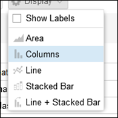
El gráfico debería actualizarse automáticamente con un gráfico de barras.
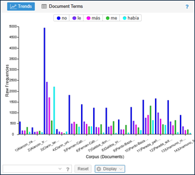
Para seleccionar una palabra en particular en Tendencias, hay que hacer clic en esa palabra en la herramienta Cirrus. La herramienta Tendencias se actualizará con la frecuencia de esa palabra seleccionada en el corpus.
Por ejemplo, al hacer clic en la palabra “usted” en la nube de palabras de la herramienta Cirrus vemos cómo el gráfico de columnas de la herramienta Tendencias cambia para mostrar los nuevos resultados.
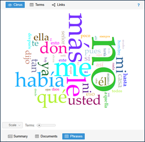
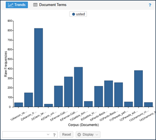
En la barra gris de la herramienta Tendencias encontramos también la herramienta Términos del documento, y al hacer clic en ella se muestra la tabla de frecuencias de los términos en el documento con las siguientes columnas:
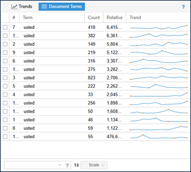
- #: es el número de documento
- Términos: es la palabra en sí
- Contar: es la frecuencia absoluta de cada término, corresponde al número de veces aparece en el documento.
- Relativo: es la frecuencia relativa de cada término.
- Tendencia: es un gráfico que muestra la distribución del término en los segmentos del documento; puedes pasar el ratón por encima del gráfico para ver resultados más precisos.
Es posible gestionar las columnas pasando el ratón por encima de la barra de título de una columna y abriendo el menú desplegable, marcando allí las columnas que deseamos ver y las que no.
Búsquedas
Para ver un término en particular en el corpus, la herramienta Tendencias tiene un cuadro de búsqueda, donde se puede especificar una búsqueda avanzada, siendo posible buscar varias palabras al mismo tiempo.
Busquemos las palabras “capitán” y “veneno” juntas y veamos con qué frecuencia aparecen en el corpus. Para ello hay que escribir las palabras “capitán” y “veneno” como palabras separadas y, a continuación, hacer clic en Intro. La herramienta Tendencias se actualiza con el número de veces que estas palabras aparecen en el corpus. Hay que tener en cuenta que Voyant Tools no distingue entre mayúsculas y minúsculas, aunque sí diferencia palabras con o sin tilde.
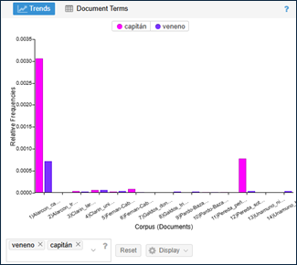
El cuadro de búsqueda de todas las herramientas permite realizar diferentes consultas avanzadas, siendo estos algunos ejemplos:
árbol: coincide con el término exacto “árbol”árb*: hace coincidir todos los términos que comienzan con el prefijo “árb-” y luego un comodín como un solo término^árb*: hace coincidir los términos que comienzan con “árb-” como términos separados (árbol, árboles, árbitro, árbole, etc.)*eron: coincidir con los términos que terminan con el sufijo “-eron” como un solo término^*eron: hace coincidir los términos que terminan con el sufijo “-eron” como términos separados (dieron, quisieron, oyeron, tuvieron, etc.)otra, manera: empareja cada término separado por comas como términos separadosotra|manera: hace coincidir los términos separados por barras verticales como un solo término“otra manera”: como una frase exacta que respeta el orden de las palabras“hombre pobre”~0: empareja las combinaciones hombre pobre y pobre hombre como una frase en la que no importa el orden de las palabras, separadas por 0 palabras- “
hombre pobre”~5: Empareja a “hombre” cerca de “pobre”, en cualquier orden, separados por no más de 5 palabras
También es posible utilizar [ ] indicando que cualquiera de los caracteres dentro de los corchetes puede aparecer como mucho una vez, así guap[oa]s sirve para encontrar las variantes ortográficas de guapas y guapos.
Palabras en contexto
Además del examen de las frecuencias de las palabras, Voyant Tools permite también examinar las palabras en su contexto.
La herramienta Contextos (o Palabras clave en contexto) muestra cada aparición de una palabra clave con un poco de texto circundante (el contexto). La vista de tabla muestra las tres siguientes columnas:
- Documento: muestra el documento en el que aparece la palabra clave
- Izquierda: muestra las palabras contextuales a la izquierda de la palabra clave
- Término: muestra la palabra clave que coincide con la consulta
- Derecha: muestra las palabras contextuales a la derecha de la palabra clave
De forma predeterminada, los contextos se muestran para las palabras más frecuentes del corpus. Para buscar una palabra diferente, es necesario especificar un término en el cuadro de búsqueda de la herramienta Contextos.
Examinemos ahora la frecuencia de la palabra “árboles” en su contexto. Para ello escribimos “árboles” en el cuadro de búsqueda y hacemos clic en Intro. El término “árboles” aparecerá con las palabras que lo rodean (el contexto), organizadas por novela.
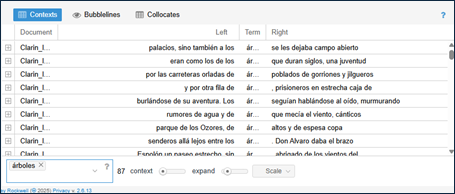
De forma predeterminada, se muestran todas las formas de la palabra en el corpus. Si solo se quieren ver los resultados de una solo novela, hay que hacer clic en el menú desplegable Escala y seleccionar Documentos. Esto generará una lista con los documentos en el corpus. A continuación, se debe marcar la novela que se desea ver en contexto.
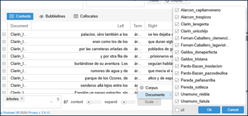
También se puede aumentar el contexto que rodea a la palabra consultada, para ello hay que utilizar el control deslizante Contexto; el valor predeterminado es 5 y el máximo 50. Del mismo modo, el control deslizante Expandir determina cuántas palabras se muestran cuando se expande una fila determinada (haciendo clic en el icono en la columna más a la izquierda); el valor predeterminado es 50, el mínimo es 5 y el máximo es 500 palabras.
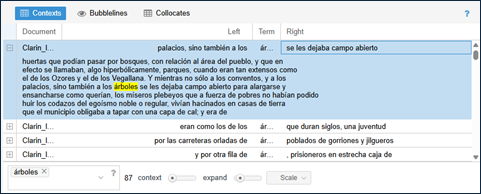
Cuando seleccionamos una fila concreta en la herramienta Contextos, la herramienta Lector se actualizará con el término de búsqueda resaltado en amarillo, mostrando también dónde aparece esa fila de texto en el corpus.
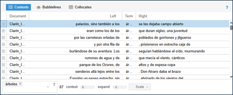
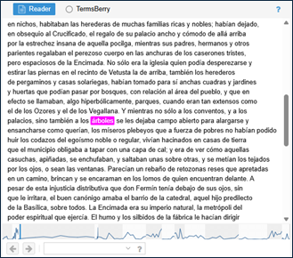
La herramienta Lector muestra todo el corpus y se compone de dos componentes visuales: el lector de texto y el visor. El lector de texto muestra todo el texto del corpus. Con el lector de texto es posible:
- Avanzar dentro del lector de texto para obtener más contenido
- Colocar el cursor sobre una palabra para mostrar su frecuencia en el documento
- Hacer clic en una palabra para buscarla en el Lector (y otras herramientas si corresponde)
El visor muestra una descripción general de todo el corpus. Esto es especialmente útil cuando hay varios documentos en un corpus. Las barras representan cada documento en el orden en que aparecen en el corpus.
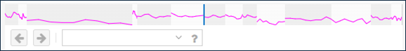
La longitud relativa del documento se representa horizontalmente (en otras palabras, cuanto más ancho se muestra un documento, más largo es) y la frecuencia relativa del término buscado se representa verticalmente mediante la línea quebrada. La barra vertical azul indica la posición actual del lector de texto en el corpus. Se puede hacer clic en cualquier lugar a lo largo del visor para saltar a otra ubicación. Para avanzar o retroceder en el texto, deben usarse las flechas junto al cuadro de búsqueda.
Otras herramientas
Además de las herramientas que aparecen de forma predeterminada en la interfaz de trabajo (Cirrus, Lector, Tendencias, Sumario y Contextos), es posible acceder a otra serie de herramientas. Para ello es necesario colocar el cursor sobre el símbolo ? en la barra gris en la parte superior de cada una de las herramientas hasta que aparezca el menú de iconos, hacer clic en el icono y seleccionar la herramienta con la que se desea trabajar. Estas son algunas de las herramientas disponibles:
Colocaciones
Mientras que la herramienta Contextos permite ver qué palabras rodean una palabra clave en el corpus, la herramienta Colocaciones muestra qué términos aparecen con más frecuencia cerca unos de otros. Echemos un vistazo a los términos que aparecen muy cerca de la palabra “adam”. Para ello debemos colocar el cursor sobre el símbolo ? en la barra gris en la parte superior de cada una de las herramientas hasta que aparezca el menú de iconos. A continuación hacemos clic en el icono , y en Herramientas para el Corpus seleccionamos Colocaciones.
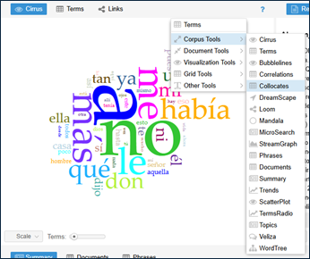
Una vez seleccionada, la herramienta Colocaciones debería aparecer automáticamente y reemplazar la herramienta Cirrus.
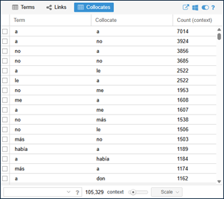
Ahora escribimos la palabra “marzo” en el cuadro de búsqueda vacío de la herramienta Colocaciones y al hacer clic en Enter veremos una de tabla con las palabras más frecuentes que aparecen muy cerca de la palabra “marzo”.
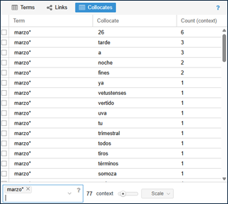
De forma predeterminada, la vista de tabla muestra las tres siguientes columnas:
- Término: muestra la(s) palabra(s) clave que se están buscando.
- Colocaciones: son las palabras que se encuentran en la proximidad de cada palabra(s) clave(s).
- Contar (contexto): muestra el recuento de frecuencia de la colocación que se produce en las proximidades de la(s) palabra(s) clave.
La barra deslizante contexto determina el número de palabras a ambos lados del término buscado. El valor predeterminado es 5 palabras a cada lado, pero puede cambiarse entre 1 y 30 palabras.
Como podemos ver, la palabra “marzo” aparece con mayor frecuencia (6 veces para ser exactos) con el colocado “26”. Las variaciones de esta colocación aparecen en el corpus, con “marzo” y “tarde”, y “ marzo” y “a” también ocurriendo 3 veces, y “marzo” y “noche”, y “marzo” y “ fines” ocurriendo 2 veces. Para comparar las colocaciones en el corpus, es preciso marcar las colocaciones que deseamos ver para que la herramienta Tendencias se actualice automáticamente. Comparemos ahora las colocaciones de “marzo” con “26”, “tarde” y “a”.
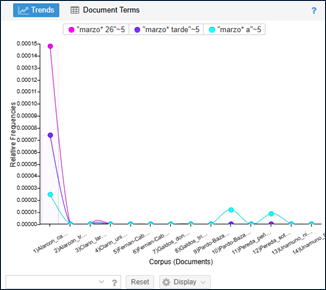
Enlaces
Esta herramienta permite analizar las colocaciones de una forma más visual. Para acceder a ella podemos hacer clic en enlaces y escribir las palabras “marzo” y “a” en el cuadro de búsqueda vacío de la herramienta Enlaces.
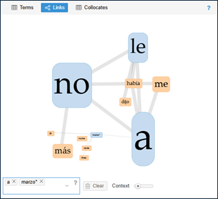
Al pasar el ratón sobre uno de los términos se muestra su frecuencia absoluta (17 en el caso de “marzo”) y los enlaces con otros términos cambian de color mostrando las conexiones.
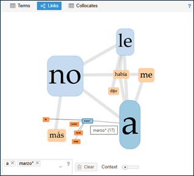
La barra deslizante contexto determina el número de palabras a ambos lados del término buscado. El valor predeterminado es 5 palabras a cada lado, pero puede cambiarse entre 1 y 30 palabras.
Líneas de burbuja
Con esta herramienta es posible visualizar la frecuencia (el tamaño de la burbuja indica una mayor frecuencia) y la distribución de los términos en un corpus (la distribución de las burbujas a lo largo de la línea).
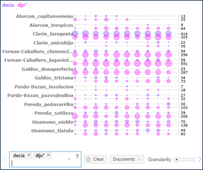
Micro búsqueda
Cada documento del corpus es representado como un bloque vertical cuya altura indica su tamaño relativo en comparación con otros documentos del corpus. La ubicación de los términos de búsqueda se muestra como bloques de color (a mayor frecuencia relativa, más oscuro es el bloque de color). Los términos de búsqueda múltiples se agrupan.
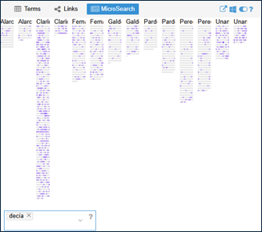
La guía de ayuda de Voyant Tools ofrece información detallada sobre todas las herramientas disponibles y sus funcionalidades.